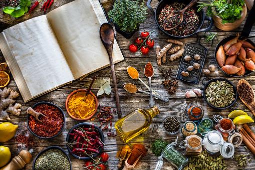

About Moon's Kitchen
I’m Moon, the blogger behind all of the recipes, photographs and words splattered around Moon's Kitchen. I am beyond excited that you found us, and on top of that want to learn a little bit of me and what we do here.
I love to eat. And I love to eat EVERYTHING, so here you’ll find a hodgepodge of recipes I love to make, and of course, love to eat. Just like anyone else, I indulge some days, and eat healthy other days. Some days I feel like making easy meals that require only a few ingredients, other days, I want to cook all day long, and use less common in ingredients like saffron and curry paste. Some days I feel like savory, and some days I feel like sweet. You get the point, there’s no niche here, I just aim at sharing delicious recipes that inspire you to get in the kitchen.
If you’re looking for a specific level of skill, we have conveniently labeled and categorized all recipes, easy, medium, and hard, so you can take your pick.